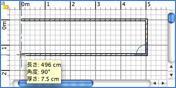

| 壁を作成 | |||
壁を作成するには、まず最初に プラン > 壁を作成 を選択、または 壁作成 ツールを選択して下さい。
間取りプラン上で新しい壁の始点をクリックし、次にプランの終点を
クリックまたはダブルクリックして下さい。ダブルクリックまたは Escape(Esc) キーを
押さない限り、それぞれ現在の壁の反対側にポイントして、
次の壁の開始点を新しくクリックして示します。一方の壁を作成している間に
その点をクリックした場合、最初の壁の始点は既存の壁の始点または終点に配置され、
最後の壁はその点をダブルクリックすることにより別の壁の始点または終点に配置されます。
クリックした点は作成した壁の厚さの中心にあり; 設定
画面から新しい壁の厚さおよび高さを修正することができます。既に
部屋を作成していた 場合は、その部屋のどこかを
ダブルクリックすることでその周りの壁を作成することができます。  壁の作成を終了するには、 プラン > 選択 をクリックまたは 選択 ツールを選択して下さい。
|
|